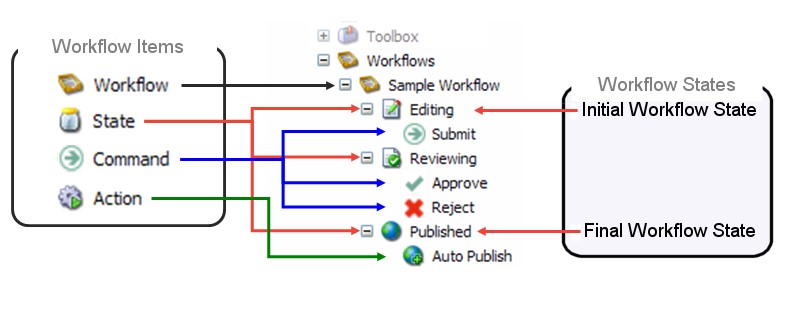
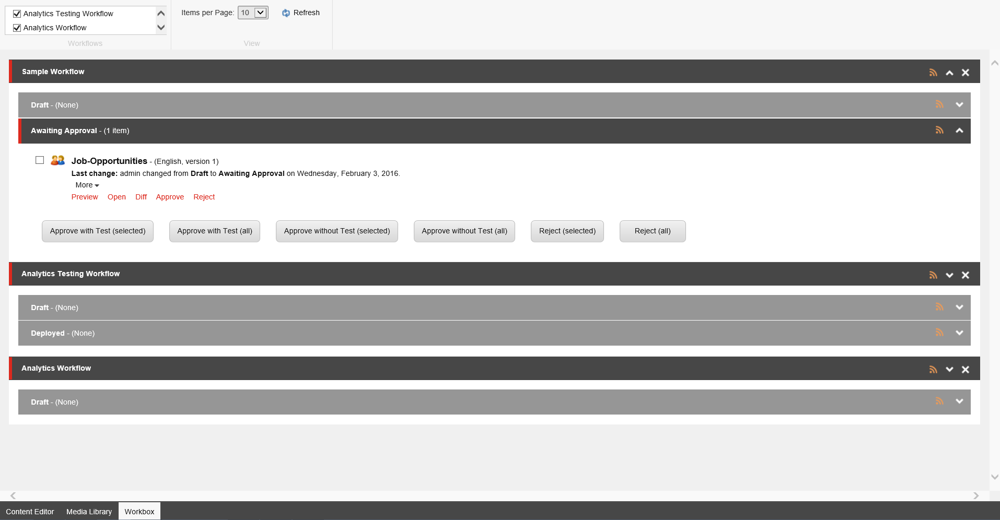

ワークフローとワークボックス¶
ワークフローとは、組織内でのウェブコンテンツ作成の作業プロセスや手順を反映した、事前に定義された一連の状態のことです。例えば、ワークフローの状態は、Web サイトに公開する前にアイテムが通過しなければならない作成、レビュー、および承認の各段階に対応しています。
ワークフローを使用することで、コンテンツの承認と公開プロセスを制御し、承認されたコンテンツのみが公開されるようにすることができます。
ワークフローは、状態、コマンド、アクションの3つの要素で構成されています。
ワークフローには、ワークフローの状態をいくつでも含めることができ、必要に応じてシンプルにも複雑にもすることができます。アイテムは、定義したすべてのワークフロー ステートを通過する必要はありません ( 次のワークフロー状態にアイテムを移動 )。ステートの中には、オプションであったり、特定の種類のコンテンツにのみ適用されるものもあります。
ワークボックスは、ワークフロー内のアイテムに関する情報（編集履歴や、各ワークフローの状態にあるアイテムの数など）を表示する Sitecore のツールです。ワークボックスでは、ワークフロー内の全てのアイテムを検索することができます。
ワークフロー¶
Sitecoreでは、任意の数の異なるワークフローを実装することができます。最低限、各ワークフローには、初期状態と最終状態の2つのワークフロー状態が含まれていなければなりません。ワークフローの最終状態にある場合にのみ、ワークフロー内のアイテムを公開することができます。
ワークフローの例
{kind=link}
この例では、ワークフローは、編集、レビュー、公開の 3 つの状態で構成されています。
以下のワークフロー項目はすべて、コンテンツ ツリーに格納されます。
ワークフロー - ワークフローを構成するすべてのサブアイテムを含む親アイテム。
ステート - ワークフローの基本的な構成要素です。ワークフローの状態は、コンテンツ作成プロセスのさまざまな段階を表します。
コマンド - あるワークフロー ステートから別のワークフロー ステートにコンテンツ アイテムを移動させます。コマンドが実行されると、アイテムはコマンド アイテムで定義されたワークフローの状態に移動します。
アクション - アイテムが特定のワークフロー状態にあるとき、または特定のワークフロー コマンドが実行されたときに自動的に実行されるアクション。
注釈
管理者は、任意のワークフローの状態を上書きし、状態を介してアイテムを移動したり、任意の時間にアイテムを公開したりすることができます。
ワークボックス¶
ワークボックスでは、ワークフロー内にあるすべてのアイテムの概要を確認でき、これらのアイテムを管理することができます。
ワークボックスでは、ワークフロー内のアイテムの編集履歴、各アイテムのワークフロー状態、各ワークフロー状態のアイテム数を確認することができます。
ワークフロー状態の各項目については、同じ項目の異なるバージョンをプレビューしたり、開いたり、比較したりすることができます。また、RSS フィードを設定することで、アイテムに変更があったときや、特定のワークフロー状態にアイテムのバージョンが入ったとき、または退出したときに通知を受け取ることができます。
ワークボックスは、起動パッドから開くことができます。
{kind=link}
ちなみに
英語版 https://doc.sitecore.com/users/93/sitecore-experience-platform/en/workflows-and-the-workbox.html